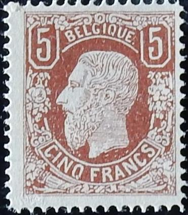
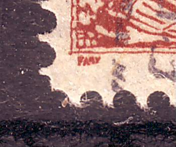
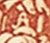
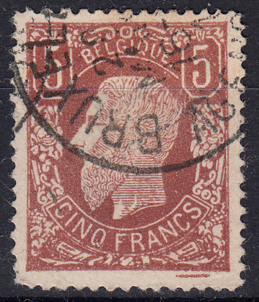
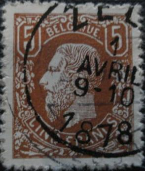

(Three forgeries with wrong perforation and "FAUX" written at the bottom left)
Return To Catalogue - Belgium 1869 5 Francs forgeries, part 1 - Belgium 1869-1892
Note: on my website many of the
pictures can not be seen! They are of course present in the
catalogue;
contact me if you want to purchase it.
For stamps of Belgium 1849-1865, King Leopold or Belgium 1866-1869 Lions, click here.
Belgium 1869 5 Francs forgeries, part 1
(Three forgeries with wrong perforation and "FAUX"
written at the bottom left)

Here with the word "FAUX" erased.
The above forgeries have wrong perforation (it should be 15), I think they were made by Peter Winter. I have seen them either uncancelled or with the "EXPOSITION INTERNATIONALE BRUXELLES BRUSSELS 24 V 14-15...." cancel. I've also seen them in pairs of two or a stamp with a white stamp attached to it. Note that outside the frame at the left bottom corner the word "FAUX" (= forgery) is written. Also note that the top of the "G" of "BELGIQUE" is quite badly done, when compared to a genuine stamp. Note, the very 'pointed' perforations, which doesn't match in the corners. They are often offered (in rather large quantities) on Ebay, so many of these forgeries must exist. I've also seen them with the word "FAUX" scratched out from the design.

I also know that Sperati made forgeries of the 5 F. He forged both colour shades of this stamp. Two different kind of forgeries were made by him (reproductions 'A' and 'B'). In the so-called 'reproduction A' there is a smaller dot behind the dot behind "BELGIQUE", also the curved brown label containing the word "CINQ" has an extension into the white line above the "N" of this word, among some other minor differences. In 'reproduction B' there is a white dot between the "A" and the "N" of "FRANCS" (click on the stamp below to see this). Reproduction A exist in both colour shades, reproduction B only in the yellow-brown shade.


Sperati Reproduction "A".

(Reproduction B of Sperati, image obtained from Richard Frajola's
website:
http://www.seymourfamily.com/rfrajola/Sperati/speratiindex.htm ); there is a rather large white dot
between the 'A' and 'N' of the word 'FRANCS'.

(Sperati forgery)


Sperati blackprint and forged cancel "ANVERS 20 FEV 7-8M
1854"
Sperati used genuine cancels for his forgeries (he probably bleached the image of a lower value, so the cancel and the paper would be genuine).


Other forgery of the 5 F; perforate and imperforate. Both with
pencancel.

The line under the horn under the "NC" of
"FRANCS" should have a break, this forgery does not
have this break.






A block of four forged 5 F stamps (11th forgery in the book of
Slagmeulder). An "A" instead of a "delta" in
the ornaments left to the eye of the King (see zoom-in at the
right). Also there is a 'wedge shaped' ornament above the second
"E" of "BELGIQUE". There is only a line in
the genuine stamp. The shading on the face of the King continues
all the way to his lips. The 11th forgery closely resembles the
7th forgery. The "AD" in the lower right corner is not
as clear in these forgeries as in the 7th forgery and there is
more shading on the cheeks of the King in this forgery. It exists
imperforate, in blocks of four, uncancelled and cancelled
("LIEGE 25 JUIN 5-6", "ANVERS 1 JUIN 1878"
and "BRUXELLES AGENCE 28 MARS 16-?")

Other forgery

Forgery with perforation not matching in the corners and a
"BRUXELLES 7 MARS 1-5 1878" cancel.
The 5 F stamp is also known to be forged from a cut out of a 'day of the stamp' stamp of 1978. They can easily be recognized by the cancel 'ZEL... 1 AVRIL 9-10 1878'.

1978 stamp from which forgeries are known to have been made. The
cancel will immediately reveal this forgery. Next to it such a
forgery with faked perforation.
A 1972 Belgica exhibition sheetlet.

Other modern forgery; note the weird squarish perforation.

{kind=link}
{kind=link}
{kind=link}
{kind=link}